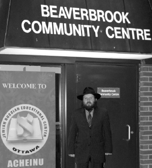

Warming Up Russian Jewish Souls in Frigid Ottawa
The fascinating life story of a boy who grew up in Russia, ended up in yeshiva, and became exposed to Chabad Chassidus. * R’ Michoel Gershzon, of the Jewish Russian Educational Center of Ottawa “Acheinu.”

Ottawa is the capital of Canada. Unlike other countries, where there is a large population in the capitol city, Ottawa is not a major Canadian city population wise, certainly not from a Jewish perspective. In cities like Montreal, Toronto and Vancouver, there are much larger Jewish communities. Government offices and ministries are located in Ottawa, and 800,000 people live there, out of which there are only a few hundred Jewish families.
Ottawa is one of the most beautiful capital cities in the world and is the third cleanest city in the world. It is constructed in the old French style. The Parliament buildings were designed in the old Gothic architectural style. More than just being a place of employment for many government employees, they serve as an attraction to many tourists.
The shliach, R’ Michoel Gershzon, lives in Kanata, a large suburb of Ottawa. He focuses his attention primarily on Jewish immigrants from the former Soviet Union. Being himself from Moscow, he understands the mentality and knows the language.
There are many computer and hi-tech companies located in the city and many Jews find employment in them, including many Russian Jews and, more recently, Israelis. They participate in the wide-ranging activities that R’ Gershzon maintains.
In Kanata, the Gershzons are the only stringently observant Orthodox family. They run a Chabad house in a community center building in the center of town which attracts numerous Jews.
DIARY OF A ZHID
R’ Michoel Gershzon was born in Moscow in 5734/1974. His parents were members of the communist party. His mother was a senior employee in the Russian Ministry of Economic Development. His parents had no apparent connection to Judaism. His paternal grandmother, however, who lived with the family, had her son buy matza for Pesach which she ate amidst the bread and chametz that were on the table.
“The ones who made my uniqueness as a Jew apparent to me were the gentiles around me, particularly the teachers and educational staff who reminded me of it again and again. I’ll never forget the last communist summer camp I attended in Sochi. Along with the good food and the activities, the director did not stop mentioning my being Jewish. She constantly asked me for the explanation of my surname.
“The principal of the school also repeatedly reminded me of my roots and would lower my marks for no good reason. When she handed out a weekly diary to all the students at the end of the week, she would read the names of the children and they would go over to her, but when she got to my name, she would not say it. Instead, she would say, ‘Here is the diary of the zhid.’ These barbs stopped the moment she overdid it and my mother informed her that the next time this happened, there would be an article in the government educational newspaper against her.
“That was my life. Since I was a child, I was a searcher. At a more advanced age, I had questions about my Jewish identity and what it meant to me.”
There was no one to teach him about the Jewish nation. R’ Gershzon went on to relate an episode that he experienced with his grandmother that sharpened his sense of Jewish identity and was a catalyst for him to find new friends.
“It was a year after Operation Peace in Galilee began. The Russians collaborated with the Arabs who bought billions of dollars in weapons from them. The communist children’s organization at school raised money for the unfortunate children in Lebanon suffering under Israeli occupation. Every week, I would get a ruble from my grandmother, which she would give me from her pension. With the fundraising efforts underway, I asked her for an additional ruble.
“She asked me what I had done with the first ruble and when I told her, she was furious. She told me bitterly that these were lies and that the Arabs were the ones who sought to hurt the Jews. My grandmother was a very quiet woman by nature and her reaction made me think.
“My grandmother died in 5749 and she had a Jewish funeral that left from one of the shuls in Moscow. When my father returned from the funeral, he said he had met two young rabbis at the shul who put t’fillin on with him. They gave him a T’hillas Hashem Siddur which was translated into Russian and a brochure that explained the holiday of Chanuka. He gave both of them to me. I read the brochure and understood it, but the text of the Siddur was like a riddle to me.”
HIS FEET LED HIM
When Michoel finished high school, he studied bio-technology in university.
“I felt that I was doing something without feeling passionate about it. Instead of studying, I would walk around the city. One Erev Shabbos, Shabbos Mevarchim Adar, my feet led me to a shul. I heard the sounds of singing and rejoicing from within and my neshama was drawn there. There were bachurim there, baalei t’shuva, talmidim of Yeshivas Oholei Yaakov which had opened and was operated by the organization Shvut Ami.
“I joined them for the davening and singing and soon felt comfortable there. The bachurim invited me to join them for the first Shabbos meal of my life. After that, I went to their yeshiva daily and each time learned a halacha or a new Jewish practice. This discovery thrilled me. I realized that there was something meaningful to my being Jewish. My joy knew no bounds.
“As to my parents, as long as this did not interfere with my academic pursuits, they were okay with it and even helped me in the t’shuva process. They koshered the kitchen and encouraged me to do whatever made me happy.
“But my days in university did not last long and a few months later I left, to the disappointment of my parents. I devoted myself to studying Torah. At the end of the year, I told them that I wanted to make aliya. I had a great desire to grow in Torah and wanted to do this in Eretz Yisroel. The roshei yeshiva arranged for me to immediately enter Yeshivas Nachalas Dovid in Petach Tikva.
“A few days before my flight, I met with one of my aunts who heard that I was emigrating. She asked me to meet with some Jews in Eretz Yisroel who had been very close with her father, my grandfather’s brother. One of these people was R’ Aharon Chazan a”h of B’nei Brak. She gave me their addresses. Half a year after I arrived I went to meet with those people.
“I discovered that my grandfather’s brother had run a weapons factory during World War II and he sheltered many religious Jews, saving their lives. He signed for them, saying they were his employees, and that is how he saved the Admur of Machnovka, R’ Aharon Chazan, and other Chassidim.
“My meeting with R’ Chazan was very emotional. When he realized who I was, he hugged me and said, ‘What a joy it is that the Gershzon family has children that look like you.’ He told me many stories of the mesirus nefesh of my great-uncle, about how he created an entire department of G-d fearing Jews who did not work on Shabbos and how he signed for them. R’ Chazan also told me that he had prepared himself in the event he would be caught and said that some are caught for stealing and bribery but he would be happy to be caught for this mitzva of Shabbos observance.”
After this first meeting with R’ Chazan came many other meetings. Michoel heard from him about the Rebbe and how he is Moshiach according to halacha. He became acquainted, for the first time, with the depth of Chassidus and the idea of hiskashrus to the Rebbe-Tzaddik-Nasi.
“At a certain point, he connected me with R’ Dovid Chanzin a”h. At first, we would learn Chassidus every Shabbos. Then we got together more often, nearly on a daily basis. We met at the old Chabad shul near the shuk.
“I found the teachings of Chassidus fulfilling. I soon decided to switch to a Chabad yeshiva. R’ Chanzin told me he could not help me with this so that nobody could say he was taking away talmidim from his nephew’s yeshiva (the rosh yeshiva of Nachalas Dovid, R’ Solomon z”l, was R’ Chanzin’s nephew).
“In general, R’ Chanzin was a unique Chassid, a special Jew, patient and understanding. He would listen to my ‘chiddushei Torah’ for hours, and to all the complaints that I heard from my friends against Chabad. When we met on Shabbos, although he would not eat the third Shabbos meal, he would make sure that I ate, according to my practice.”
More months passed and his transfer to a Chabad yeshiva was postponed.
“One day, at the beginning of Elul, a bachur from Switzerland came to yeshiva. This bachur saw me trying to learn Derech Mitzvosecha of the Tzemach Tzedek. He asked me what I was learning. I was frightened and tried to avoid answering, but he came over to me and confided that he was a Chabad Chassid. ‘So how did you end up here?’ I asked.
“The rav of the city he came from was a Litvak and he managed to convince the bachur’s father to send him to this yeshiva in Petach Tikva. We soon became close friends and he regularly shared with me the special qualities of Chabad yeshivos. He told me about the yeshiva in Kiryat Gat from where he came and described the farbrengens and the month of Elul in Tomchei T’mimim.
“A few weeks went by before I dared to take action. I told the rosh yeshiva himself, R’ Boruch Shimon Solomon, what I wanted, and he listened and asked me to give him two days to think about it. After two days he said he saw I was determined and therefore, he would not insist that I remain in his yeshiva.”
THE LIGHT IN 770
The first days in the yeshiva in Kiryat Gat were exciting but strange for Michoel. It was all the opposite of what he was used to.
“In the Litvishe yeshiva I felt that I was a someone. In Chabad, I was another soldier among many others. I remember that on one of the first mornings in yeshiva, after the davening, I was ironing my shirts because I was taught in the Litvishe yeshiva that it was important to look good. Someone passed by and asked, ‘Isn’t that a waste of time?’ I looked at him in surprise. A few more months passed before I understood what he meant and what the yeshiva thought about ironed clothes.”
It was in the yeshiva in Kiryat Gat, under R’ Moshe Havlin, that Michoel became a Tamim in every respect. In 5759, he went with his class for a year on K’vutza to 770.
“What I got that year in 770 is incalculable. When I first met R’ Dovid Raskin and he heard that I am from Russia, he asked me to leave his office for a few minutes. When I went back in, he gave me a dollar he had received from the Rebbe on 15 Elul, the day that Tomchei T’mimim was founded. Another Chassid who had a huge influence on me was the mashpia, R’ Itche Springer, a Chassid and mekushar who took care of me as though I was his only child.”
With the permission of the hanhala, Michoel was allowed to work in order to support himself.
“Before Pesach, I was told about an opportunity to run a Russian language holiday program somewhere out of town. The money promised for this job was high. I asked the mashgiach, R’ Kuti Rapp, for permission. He said, ‘As a mashgiach, I know that you need the money and give you permission, but as a friend I recommend that you stay and absorb the special flavor of Pesach in Tomchei T’mimim.’
“After much deliberation, I decided to stay in 770 and indeed, that Pesach laid the foundation for every Pesach since then. I took all the minhagim and hiddurim from the yeshiva’s S’darim, something I have for life. I don’t want to think about how my Pesach would look if not for that Pesach on K’vutza.”
When he finished the year on K’vutza, he returned to Eretz Yisroel and worked as a maggid shiur in a yeshiva for new immigrants in Migdal HaEmek. From there, he went to Moscow where he became the right-hand man of R’ Berel Lazar in founding the local mesivta. He also launched the kashrus supervision system there. Among other things, he was in charge of koshering the kitchen in the Kremlin when the president of Eretz Yisroel visited with his retinue.
While in Moscow, he met his wife. They married and decided to live in Eretz Yisroel. After much deliberation, they selected Nachalat Har Chabad.
OTTAWA IS WAITING FOR GERSHZON
From the outset, the couple looked for a place of shlichus. Not many months later, friends told them about a group of Jews trying to organize a community in Ottawa, Canada which was looking for a rabbinic leader.
“There were some Jews in the city, immigrants from the Soviet Union who had become interested in Judaism, each in his own way, and they wanted to start a community. From the start, there was disagreement among them. Some had become religious through Lubavitch and wanted a Chabad rabbi, while others had become religious through Litvishe rabbis and wanted a rabbi from Lakewood. I began looking into the situation and spoke with everyone involved who agreed that I should come and serve as rav and shliach.
“I thought that it would be better if, before I went, I obtained a resident permit from the Canadian embassy in Eretz Yisroel, but the process takes a long time. I asked the Rebbe for a bracha and the answer I opened to in the Igros Kodesh was astonishing and later was seen to be miraculous.
“The Rebbe wrote: about arranging the documents and the order of priorities, you are correct in your thinking. But the place you are going to requires haste since the door can close.
“After reading this, I did not delay. We packed our belongings and took a flight to Ottawa.”
The Rebbe’s answer turned out to be prescient, because a few weeks later the group that wanted to build a community broke up. The woman who had pushed the hardest for bringing R’ Gershzon to Ottawa became sick a short while later and died. Another woman left the city.
“If I had delayed a few weeks, I doubt this trip would have happened. In any case, right after we rented a home, we began working with the Jews of the city. We began preparing for Purim and then for Pesach. We hosted many people in our home and word of our coming spread among the Russian Jews of the city.”
In Ottawa there is a long-standing Chabad presence. There are a number of shluchim who are doing wonderful work, but they felt it was necessary to have someone working specifically with Russian Jews who had come to the city in droves. These Russian Jews were highly suspicious and R’ Gershzon felt he had to undertake grand projects in order to raise the level of Jewish pride.
“A few weeks before Lag B’Omer, I asked people whether they make a bonfire as they do in Eretz Yisroel and other countries. They looked at me as though I was crazy. In order to do such a thing you needed to have a hundred and one signatures and permits. Since I was a brand-new shliach and full of enthusiasm, I decided we needed a bonfire and we had to make an impressive parade. I went to the government office and in my broken English I explained that I wanted to rent space in the large park in order to make a bonfire.
“The clerk asked some questions and I guess he was shocked into signing the papers. When I went to the park with the signed papers, the park director was stunned. He said that if he had known of my intentions beforehand, he would have made sure to thwart them. After some difficulties, we got Yehuda Piamenta and his band from Crown Heights, we hung flyers all over the city, and on Lag b’Omer there were about 300 people in the park. By the standards of Ottawa, that was a major accomplishment. Since then, the Lag B’Omer bonfire has become an annual event.”
For Chanuka, R’ Gershzon decided that the pirsumei nisa had to be done in such a way that most of the city would get to see a Menorah.
“We hired a stretch jeep limousine with a trailer, on which we put a Menora three meters high. Behind it traveled ten cars with illuminated Menorahs and flashing lights. We drove from Kanata toward the center of town.”
Their outreach work generated a lot of exposure and many Jews began taking an interest in Judaism. But at the same time, there were difficulties.
A DESCENT FOR THE SAKE OF AN ASCENT
“We wanted to buy a spacious building in the center of town. We made a down payment and thought we would manage to pay the rest of the money, but were unable to raise it. We lost the down payment and got into debt. It reached the point where we couldn’t make payments on our own home, and one day we found ourselves out of the house, not knowing where to turn.
“My wife and I wrote to the Rebbe and put the letter into a volume of Igros Kodesh. The answer was eye-opening. The Rebbe wrote to a bachur from Morocco who wanted to join his parents who had made aliya. The Rebbe pointed out the greatness of Eretz Yisroel, but said the shlichus he had in Morocco was no less important and his job was to make Eretz Yisroel out of Morocco.
“We did not need more than that. We decided we would remain in Canada and we saw Hashem’s salvation in the blink of an eye. We suddenly began getting donations and things straightened out. We bought a house for ourselves and rented a spacious building in the center of town for all of our activities.
“In order to reach a broader public, we host a Shabbos meal at the Chabad house now and then. The evening begins with davening and is followed by a bountiful meal for dozens of people. There is a program for men, women and children. People love these Shabbatons.
“Out of hundreds of Russian Jewish families who live in Ottawa, nearly all their children attend public school, so we started a Sunday school which has many children.
“We have another nice project that takes place daily. Since school is over at three, we have a children’s program until six in which they get a hot meal and they can do their homework. Many children attend this program and of course, they are exposed to Jewish ideas in a Chassidic atmosphere.”
During the week, R’ Gershzon gives a number of classes. He is known as an excellent speaker who carefully prepares his shiurim.
“Every Thursday we have a shiur on the parsha as seen through the teachings of Chassidus. I also give an in-depth shiur from time to time on concepts like the Jewish calendar, sanctifying the new month, relationships and parenting, all according to Chassidic teachings.
“I recently started a shiur in Shaar Ha’Yichud V’Ha’Emuna. This shiur was started because non-Jewish students and academics were attending the parsha classes and I gently asked them not to attend. I thought about what I could teach so that they too could attend. I saw that the Rebbe encouraged a shiur for gentiles in Shaar Ha’Yichud V’Ha’Emuna. Among the regular participants is a Jewish professor of mathematics and other top academicians.
“There is a family whose parents remained in Moscow and all the children live in Ottawa. Last summer, the parents came to visit and sadly, the father had a stroke. He was rushed to the hospital but the doctors could not help him and they declared him dead. R’ Bulka, the hospital chaplain, received a report from that hospital about the death of a Jew and immediately contacted me and asked me to go to the hospital and meet with the family.
“I met them at ten in the morning and saw they were planning to cremate their father. I began working to convince them to give him a Jewish burial. They replied, ‘Our father never observed Jewish tradition and did not teach us to do so. Why shouldn’t we cremate him?’ I spoke to them for hours. With the help of R’ Bulka they finally agreed to bury him on condition that they only pay the amount of money they would have paid to the cremation company. We were able to arrange a Jewish funeral for the father before sunset.”
CONNECTING JEWS TO THE REBBE
Last year, in honor of Yud Shevat, R’ Gershzon decided the time had come to arrange a trip to Beis Chayeinu.
“We arranged for a bus for mekuravim that traveled along with us to visit Crown Heights. In the group was someone who had suffered from cancer over the years and, as a result, did not like being touched and hated crowds. Our plans included davening Friday night in 770, but some friends tried to dissuade me because of the crowding. Instead, they said to take them to a shul in the neighborhood. Others thought otherwise, saying the warmth of 770 would be the most powerful impact of the trip. I wasn’t sure what to do.
“I finally gave in. Why did these Jews make the long trip from Ottawa? Only because of the Rebbe. I took them all to 770. At first, they found places to sit, but then a group from Brazil blew in like a storm. The Brazilians danced on the tables, pushed, and created a major commotion. My mekuravim were moved from place to place and I was sure they would be upset.
“When the davening was over and we went out as a group to our hosts, that man said to me, ‘You should know R’ Gershzon, this is the holiest place in the world.’ It took me some time to believe that he was saying this sincerely and not sarcastically. He went on to say, ‘770 has endless reserves of energy and emotion.’ The rest of the group concurred. I was left open-mouthed. What happened was precisely the opposite of what I had feared and what I had been warned would happen. I thanked G-d for giving me the good sense to go to 770. To me, this was a lesson as to how forbidden it is to put our animal souls into our shlichus.”
How do you finance your shlichus?
“It’s something every shliach has to deal with, certainly when he is starting out. In the early years, most of the donations came from my mekuravim in Moscow, but now it’s somewhat different. I was raised with a traditional Russian education and I was embarrassed to ask for money. One time, after I visited a certain wealthy man and left empty-handed, I wrote about my feelings to the Rebbe.
“The answer was clear. The Rebbe wrote that someone who helps the Chabad mosdos needs to know that he is not helping an individual, but is doing a personal favor for the Rebbe, his father-in-law, who founded the mosdos and oversees them daily, and who does not remain in debt; he pays all those who help with ample children, life and health.
“This response gave me much encouragement. Although in the beginning it was hard, we see how the Rebbe does not remain in debt.
“In the early days of the shlichus, I was a guest in Montreal one Shabbos. During the farbrengen, someone got up and introduced me as a new shliach to the Russian Jews in Ottawa and he asked me to speak. I was new to shlichus and I did not yet have anything to say about it. So I described in detail how I koshered the kitchen in the Kremlin, including all the hashgacha pratis I experienced on that occasion. The farbrengen went on until Mincha.
“After Mincha, an older Chassid came over to me and asked me to contact him after Shabbos. When we met, he said he wanted to help us and donated a large sum. Since then, he’s become one of our biggest supporters.”
You’ve been through a lot of tough times. From where did you get the strength?
“We get the strength from the privilege to be shluchim of the Rebbe. Every time I experience hardship, I go to 770. I try not to miss a Kinus HaShluchim. And Beis Chayeinu provides strength. When the battery drains out, there in 770 is the generator and the plug. At the beginning of my shlichus, I was also in constant touch with my mashpia from Eretz Yisroel. For a long time, I would hook up to the shiurim he gave in Likkutei Sichos and that gave me a lot of strength.
“There is another thing, and that is when I see Jews getting involved in Judaism. It is not always someone who turns his life completely around; even a small change provides a lot of satisfaction. The grandparents of these Russian Jews left Judaism. Every mitzva that they commit to is very satisfying.
“We have a family here whose grandmother was a leading communist in Russia who was in charge of the health ministry. Today, her son has reached the point that when he goes shopping in the supermarket, he looks for kosher products. This alone provides enormous strength.”
How do you manage as far as your children’s chinuch is concerned?
“Our job is to implant pride in our children that they belong to the king’s legions. Our daughters feel that they are an integral part of our shlichus. There is a family that comes to us a lot; they have two daughters. Every Shabbos, these girls would come for the Shabbos meals but were not always dressed modestly. One Shabbos, they surprised us when they came wearing modest, beautiful dresses. We were very happy about this and asked them what happened. Their mother told us that the previous Shabbos, one of her girls asked our daughter why she wears a dress. Our daughter said, ‘Because I am Jewish, I am a princess, and that is how a princess dresses.’ Since then, her girls began pestering their mother saying they are also princesses and they want to wear dresses on Shabbos.
“Recently, these girls had an even more moving story. They would always come along with their parents to our Shabbos meal by car until the Shabbos when they begged their father to stop. ‘If we are Jews, we cannot travel on Shabbos.’ Their father tried to explain to them that they were a different type of Jew, but they responded mockingly that apparently they were phony Jews because the Gershzon girls did not travel on Shabbos.
“There is no question that children have an enormous influence on shlichus and the best kind of chinuch to give them, when they are far from a Chabad community, is one in which they are proud of what they are doing. You can’t throw all the difficulties at them. It is important for them to see that despite all the difficulties, their parents are happy at the privilege of being shluchim.”
In conclusion, I want to ask about Moshiach and Geula. How do you publicize the message of Geula among your mekuravim in such a way that the message motivates them to prepare for Moshiach’s coming?
“We approach it very simply. Yechi Adoneinu is the truth. The Rebbe encouraged this proclamation many times and this is the essence of the shlichus. People accept this as a matter of fact as I do. After Shma Yisroel when putting on t’fillin, they say Yechi. At shiurim and farbrengens, we talk about the Rebbe as Moshiach and about the imminent Geula.
“Over the past seven years that we are on shlichus, I have met only two Jews who were antagonistic. They were niskarev by Litvish organizations and Moshiach is only one of their problems with Chabad and Lubavitch.
“My approach is to speak from the heart. When mekuravim see that this matters to you, and you live it sincerely, they will accept all the logical explanations that follow.”
INCREASING PURITY IN OTTAWA
R’ Gershzon has been working on shlichus in Ottawa for seven years. If you were to ask him what is his current wish, he would tell you building a mikva.
“There is a mikva but it is far and not convenient for the mekuravim. In this past year, every time I write to the Rebbe and go to 770, I ask for a bracha to get a donor who will pay for a basement so we can begin building. I have a good friend who went to 770 in 5750 and gave me six dollars for this project that he received from the Rebbe. I plan on giving them to whoever helps with this project.”
Nosson Avrohom. "Warming Up Russian Jewish Souls in Frigid Ottawa." Beis Moshiach, no. 926 (May 13, 2014).